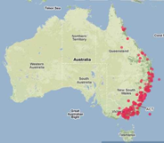
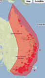
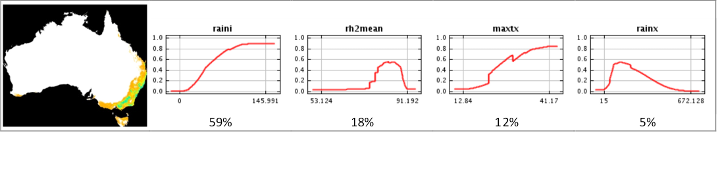

This work is licensed under a Creative Commons Attribution 3.0 Australia License 
Page contents:
Author: Dr Jane Elith, The University of Melbourne, School of Botany
Dr Jane Elith,
The University of Melbourne
About the author
Ecologists, field naturalists and all sorts of people might ask such a question. The greater glider, Petauroides volans (Kerr, 1792), is Australia’s largest glider, an arboreal marsupial that feeds on Eucalyptusleaves at night and shelters in tree hollows during the day. We have records of where it has been observed, but where else might it be? Species distribution models (“SDMs”, a.k.a. “ecological niche models”) are often used to answer such questions. They link records of a species’ occurrence with relevant environmental data, and predict areas that could be suitable for the species. These models assume that the records that we have are a random sample of suitable locations for the species, and that the environmental data include variables important to the species. Species modelling tools are used throughout the world to answer questions including:
Source: Wikipedia The Greater Glider (Petauroides volans).
The Atlas of Living Australia (ALA) provides the infrastructure necessary for making a species distribution model. This is a Case Study on the Greater Glider using the ALA web site.
There are many ways to make a species distribution model. The ALA has chosen MaxEnt as its modelling method because it suits most of the current data, works well, is fast, and is freely available. You can run MaxEnt within the ALA interface, or you can download the program and run it on your own computer. The ALA has a wide range of species data and over 300 environmental layers. To run MaxEnt on your computer, you would need the species data (downloadable from ALA) and relevant environmental data (which is harder to find, download and use).
MaxEnt compares environments where the species occurs to those in the broader landscape. It finds the model that best emphasizes the environments occupied by the species whilst also predicting new places where there are no records. MaxEnt runs automatically in the ALA, but can be “tweaked” more if run on your computer. In the ALA, the key choices are:
In October 2010 there were 640 occurrence records of the greater glider in the ALA. Most were in sensible places, but some were in the ocean and one in Madagascar. These were excluded.
Ecologists say that the greater glider needs the right climate and other resources to satisfy their energy and water requirements as they feed, move around, reproduce, and rear young. These must include suitable tree hollows for shelter. We selected 13 layers that are likely to represent those conditions – either directly, for the glider itself, or indirectly, by providing suitable conditions for the trees it requires. The layers were humidity (annual), precipitation (of driest and wettest months), temperature (maximum of the hottest month, minimum of the coldest month, mean annual maximum), substrate (lithology fertility, organic carbon, topographic wetness, soil depth), topography (topographic relief, valley bottom flatness index) and vegetation (NDVI mean).
We chose one Active Area (landscape) down the eastern side of Australia using the “Polygon” option (see map at right). This was to identify the variables driving the fine-scale distinctions between occupied and unoccupied areas in the east. A second Active Area covering Australia to show the continent-wide correlates of distribution (Active Area option: “Box-Australia”).
We used two models because we chose two landscapes. Both predicted similar distributions, and used similar variables with similar response shapes to predict the distribution. It is not always like this – quite often, the important variables will change depending on the scale of the landscape used. The figures below are for the all-Australia landscape. They show the mapped predicted distribution, with green values higher probabilities than oranges. The four graphs show the fitted functions for the four most important variables: from left to right: precipitation of the driest month; mean annual relative humidity; maximum temperature of the hottest month and precipitation of the wettest month. The percentages below each graph show the relative importance of the variable in the model. The shapes of the graphs show the species response to that variable when the other variables in the model are held constant. For example, the first graph shows that the species is unlikely to occur when the driest month is very dry (i.e. towards the left end of the x axis). These graphs give insights into the variables most strongly related to the species distribution. These should be checked against ecological knowledge.

These models, like all, are based on certain assumptions. If these aren’t met, your model might be nonsense. The most common problems are with the species data: the assumption is a random sample, so if you have, instead, a very biased sample (e.g. if only one state was surveyed) then the model will be more a model of sampling effort than species distribution. Or if the taxonomy is unclear and you have records for 3 species rather than one, then your model will be trying to predict suitable conditions for all three species. Or if you have very few records (e.g. less than 30), there won’t be much information to train the model on. Perhaps you might also lack the relevant predictors, or the species might be mostly restricted by the distribution of a predator. All of these have solutions, but will need some extra work on your desktop version. Similarly, using these models for climate change or invasive species predictions is rather more difficult than for species at equilibrium, and needs special care.
See the Spatial Portal Prediction (Tools) for more information on how the MaxEnt Prediction works.
See the Prediction Help »
Dr Jane Elith is an Australian Research Council Future Fellow based at The University of Melbourne. She is an internationally acknowledged expert in species distribution modelling (SDM), having worked with terrestrial, freshwater and marine species. Jane is currently focussing on the use of SDM for predicting climate change impacts and invasive species. She has played a key role in facilitating the adoption of improved methods from the field of machine learning. Jane has published over 40 papers on ecology, a number of which are some of the most cited papers in this field.
The University of Melbourne, School of Botany
Elith, J. and Leathwick, J.R., 2009. Species distribution models: ecological explanation and prediction across space and time. Annual Review of Ecology, Evolution and Systematics, vol. 40, pp. 677-697.
Pearson, R.G., 2007. Species’ distribution modeling for conservation educators and practitioners. American Museum of Natural History – Download pdf
Franklin, J., 2010. Mapping Species Distributions: Spatial Inference & Prediction. Cambridge University Press, UK.
Kearney, M.R.; Wintle, B.A. and Porter, W.P., 2010. Correlative and mechanistic models of species distribution provide congruent forecasts under climate change. Conservation Letters, vol. 3, pp. 203-213.
Phillips, S.J., Anderson, R.P. and Schapire, R.E., 2006. Maximum entropy modeling of species geographic distributions. Ecological Modelling, vol. 190, pp. 231-259.
Phillips, S.J. and Dudík, M., 2008. Modeling of species distributions with Maxent: new extensions and a comprehensive evaluation. Ecography, vol. 31, pp.161-175.
Elith, J., Phillips, S., Hastie, T., Chee, Y., Yates, C. and Dudik, M., 2011 in press. A statistical explanation of MaxEnt for ecologists. Diversity and Distributions